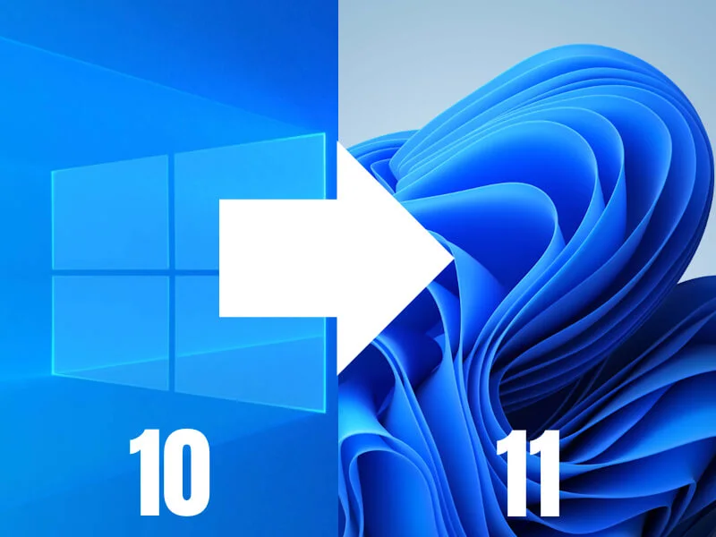
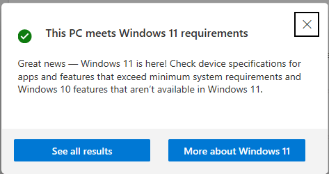
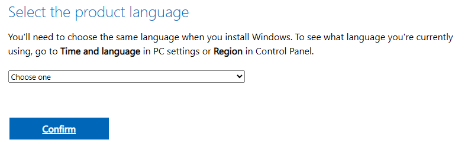
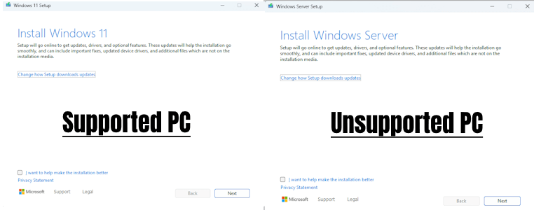

Upgrading to Windows 11 24H2
The time to transition from Windows 10 to Windows 11 is here.
Introduction
Windows 11 was released in 2021, making it four years old this year, if you are running Windows 10 or older you need to upgrade to ensure that your PC remains updated and compatible with the latest software.
Windows 10 will stop receiving security updates in October this year, this means that you have only a few months to upgrade or risk becoming vulnerable to cyber-attacks.
Windows 11 21H2 and 22H2 are also EOL as is Windows 10 21H2 and older, you can follow this guide regardless of the version of Windows 10 or 11 that you are running, the latest version as of 01/01/2025 is Windows 11 24H2.
Currently you can upgrade from Windows 10 to Windows 11 for free, the upgrade process is really simple and straight forward provided that you have a supported PC, if your PC is not supported you can still upgrade but it will be a bit more complicated.
I advise that you backup your computer before proceeding, you can learn about backing up your computer and your files in my "Backing Up Windows 10/ 11" guide, link below.
View Backing Up Windows 10/ 11 guideHow do I tell if my PC is supported?
It is really simple to tell if your computer is supported, you need to use free Microsoft PC Health Check App as it is the official way to tell if your computer is supported. You can the PC Health Check App below.
Download PC Health CheckerHow to use the PC Health Check
The PC Health Check App is really easy to use, once you have downloaded and installed it you should see a screen like the one pictured above, you just need to click on the 'Check Now' button and it will tell you if you PC is ready for Windows 11 or not.
If you see a message telling you that "This PC meets Windows 11 requirements" you can skip the next steps and jump straight to Downloading and Installing Windows 11.
If you see anything else, this means that your PC is not officially supported but you can probably still run it anyway, read the 'What to do if my PC is unsupported?' section for more information.
What do I do if my PC is unsupported?
If your PC is not officially supported for Windows 11 you will be able to run Windows 11 on your computer system if you meet the following core requirements:
- Your PC supports POPCNT.
- Your PC uses WDDM 2.0 display drivers.
You can check if your PC supports POPCNT using my POPCNT Checker (check_popcnt.exe). Visit the POPCNT Checker download page to download the program and find instructions on using it via the link below.
POPCNT Checker Download PageFor a stable Windows 11 experience, your PC must use WDDM 2.0 display drivers or higher. You can find your WDDM driver model version by following my "Finding your WDDM version" guide.
Finding your WDDM versionIf you find that your PC does not have WDDM 2.0 display drivers or later, or does not support POPCNT, you will need to replace your PC before October 2025 to stay secure or consider switching to an alternative OS such as Ubuntu, Linux Mint, ChromeOS Flex, etc.
If your PC is unsupported by Windows 11 but is meets the core requirements that I have outlined, you can still upgrade to Windows 11, but you will need to bypass the system requirements.
You can bypass the Windows 11 system requirements using the Windows 11 Requirement Bypass tool, this tool will trick the Windows 11 installer into thinking that your computer is supported, once you have run the tool you can upgrade to Windows 11 in the same way as any "supported" PC.
You can find the instructions and download link on the Windows 11 Requirement Bypass Tool download page linked below.
Windows 11 Requirement Bypass ToolDownloading and Installing Windows 11
Windows 11 is available as an upgrade from Windows 10, this means that all of your files and applications should carry over when you upgrade, the upgrade is free for both supported and unsupported PCs.
You can download the official version of Windows 11 from the official Microsoft website via the link below.
Visit Windows 11 Download PageMake sure you download from the third option down from the top, like in the image above, you then need to click "Download Now."
Next you need to select the product language, this must be the same as your current Windows 10 install. Follow the instructions provided for finding your product language, then select the appropriate product language, then click "Confirm."
Now you can download the Windows 11 ISO, this will take a while depending on your internet bandwidth as the file is roughly between 3-7GB in size. On average you should expect it to take around 10-25 minutes to download.
When the ISO file has downloaded, you need to open it, this will open a virtual DVD, from within the virtual DVD you need to double click on the "setup.exe" file.
After opening the "setup.exe" file, you should now see a screen that says, "Install Windows 11" or "Install Windows Server", on this screen you need to click on "Next."
Do not worry if it says "Windows Server" instead of "Windows 11", the installer will still install Windows 11 regardless of what it says, this is because the installer has been tricked into thinking it is installing Windows Server as a part of the system requirement bypass.
Next, you need to read through the "Applicable notices and licence terms", then click "Accept" to continue.
If you are asked to "Choose what to keep" make sure you select "Keep files, settings, and apps", if you do not select this option all your files will be deleted along with any applications you have installed. Click "Next" to continue.
At this point, you should see a screen that says "Ready to install", now just click the "Install" button and your PC will begin upgrading to Windows 11.
If you see a screen that says "Installing Windows Server" do not be alarmed, this is normal when upgrading to Windows 11 on an unsupported PC.
The upgrade to Windows 11 can take a very long time, especially if you have an older computer. The upgrade process can be as little as 10 minutes or take several hours to complete, just be patient and make sure that your device is plugged in and on charge.
What you need to do after upgrading to Windows 11 24H2
After your computer has finished upgrading to Windows 11, there are three things that I recommend you do:
- Check for Windows Updates.
- Optimise your computer.
- Optimise your settings.
Checking for updates is really easy on Windows 11 as you just need to open the Settings app and navigate to 'Windows Update', alternatively you can use the link below to check for Windows updates.
Check for Windows updatesIt is important to optimise your Windows 10/ 11 computer system to ensure that you get the most out of it, learn about why and how you should optimise your PC by visiting my guide.
Guide on optimising Windows 10/ 11Windows 11 comes with many annoyances such as Recall AI, Copilot AI, widget ads in the taskbar, etc, optimising your settings will disable all this junk, make your PC run smoother and improve your productivity.
Download: Settings Optimiser ScriptsPage Updated: 24/03/2025
Page Author: Hackboto